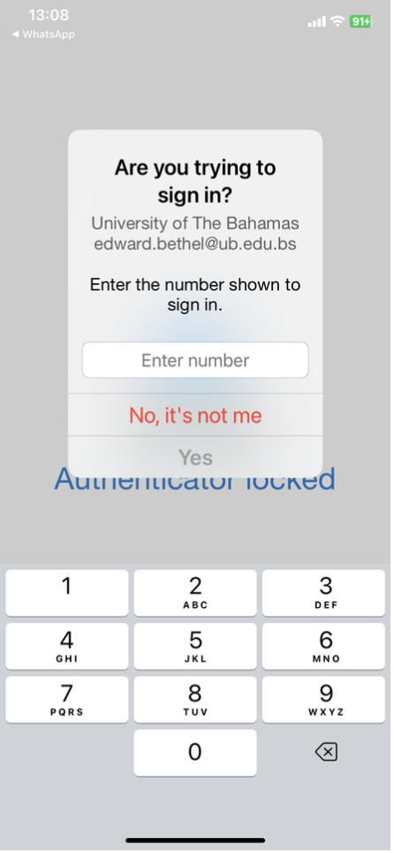

Moodle Handbook
2025-05-01
Chapter 1 Introduction
What is MOODLE? This is a funny name for a powerful learning tool. Moodle is software that provides an online learning space for all your virtual classes. You can access the Moodle login from the UB website.
1.1 Getting Started
- The first thing you need to do is to access Moodle from the Moodle Home page:

Figure 1.1: Navigate to Moodle from the UB Homepage
- At the Moodle HomePage, click “Login” at the top right of the screen:

Figure 1.2: Login to Moodle
1.2 Authenticate using LDAP
- You will now have to authenticate through the active directory LDAP. When you click Login from Moodle, you are taken to the Office 365 login page:
Figure 1.3: Navigate to Moodle from the UB Homepage
- Sign in with your UB-issued email:
Figure 1.4: Use your UB email to sign in
- You will be taken to UB Office 365 sign-on page:

Figure 1.5: Popup taking you to UB sign in page
- Use your UB Password to sign in from the university sign-in page:
Figure 1.6: The UB Office 365 sign-in page
- Confirm your identity using the mobile Authenticator app (iOS, Google Play):

Figure 1.7: Instrutions to approve your sign in
- Approve your sign in by typing the number shown on your approve request in the Authenticator:

Figure 1.8: Approve your sign in by typing the number in the Authenticator